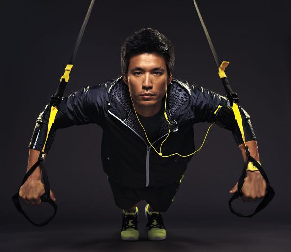

懸吊式訓練架
TRX立式懸吊訓練架提供團體懸吊訓練方案，商業用高強度鋼質結構搭配多個附著點配件，吸引更多喜歡TRX懸吊訓練的朋友進行團體訓練，也為您的俱樂部吸引更多成員加入。

客製化專屬你的訓練架
TRX-Frame提供專屬於你訓練場所適用的懸吊式訓練吊架，並提供專業的安裝服務，讓你專心於訓練課程與器材操作。

TRX立式懸吊訓練架提供團體懸吊訓練方案，商業用高強度鋼質結構搭配多個附著點配件，吸引更多喜歡TRX懸吊訓練的朋友進行團體訓練，也為您的俱樂部吸引更多成員加入。
TRX-Frame提供專屬於你訓練場所適用的懸吊式訓練吊架，並提供專業的安裝服務，讓你專心於訓練課程與器材操作。